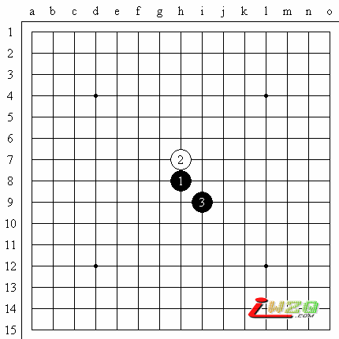
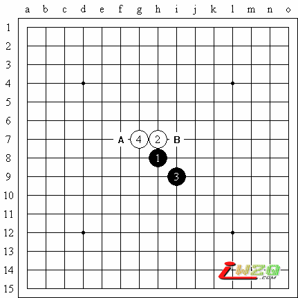
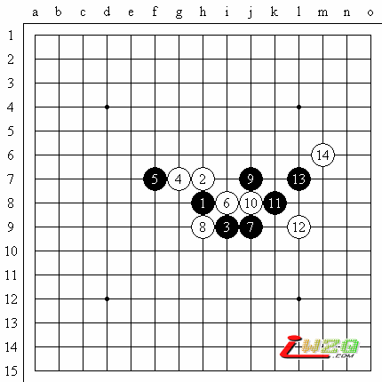
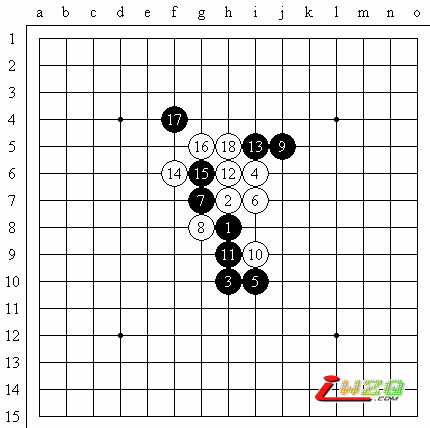

原文地址：http://www.shwzq.com/online/ShowArticle.asp?ArticleID=1300
大家好。我是顾炜。今天在这里为大家直播第五届上海连珠名人邀请赛分组预赛第一轮山口釉水九段和冈部宽七段的对局。
山口猜得黑棋布局，经过考虑，山口开了个直指布局丘月。

(11:47) 评论员 顾炜 说：大家好，我是顾炜！现在比赛已经正式开始了，今天我们第一轮是分组预选赛，直播的对局是山口釉水九段和冈部宽七段！
(11:50) 评论员 顾炜 说：山口猜得黑棋，布局，经过考虑，山口开了个直指布局丘月
(11:52) 评论员 顾炜 说：冈部宽是日本新生代棋手的领军人物，具有参加多次国际大赛的经验，他目前正在长考，决定是否交换。
(11:53) 评论员 顾炜 说：冈部宽经过考虑，提出交换。
(11:55) 评论员 顾炜 说：山口正在考虑，按照常理推断，第4手应该没有其它变化。
(11:55) 评论员 顾炜 说：果然，山口下了最强的白4

(11:57) 评论员 顾炜 说：在这里要向大家介绍一下，山口釉水是目前获得二次上海名人的高段棋手，在日本国内，也是顶尖的棋手，可以排在日本前五名。他最具有特色的就是计算精深，尤其擅于打防御反击，对于执白很有心得。
(12:00) 评论员 顾炜 说：他在获得第40期名人时，就是凭白棋挑战长谷川一人名人(当时)成功。在第3届上海名人邀请赛中，曾经非常漂亮的执白棋依靠现场四十分钟的计算，战胜了中国辽宁棋手吴镝五段的研究。由此可见一般。
(12:02) 评论员 顾炜 说：现在冈部宽给出了两打，经过短暂考虑，山口选择了黑5的最强点A，马上下了白六。看来是早有研究。
(12:04) 评论员 顾炜 说：如果黑5选择B点，那是黑棋主动的变化，但是是根据山口的对局风格，他是喜欢下一些比较少见的变化，以此来考验对方的应变能力。从现在来看，山口正是这么来做。
(12:06) 评论员 顾炜 说：冈部宽经过思考，下了实战黑棋的应手，对于黑棋的应手，在场观战的高手当然也有不同的看法。大家可以看一下右边的演示棋盘
(12:07) 评论员 顾炜 说：也有观战的高手认为，如演示盘黑棋的下法，应该也是可以成立的。
(12:09) 评论员 顾炜 说：山口下了白8，强防，这个防御非常强劲，基本上将导入双方苦战的局面，从目前来看，山口还是继续很好的贯彻自己的战术，通过防御，诱导对方在攻击中出错，从而取得胜利。
(12:11) 评论员 顾炜 说：
(12:12) 评论员 顾炜 说：冈部宽的黑9是防中带攻，对于五子棋爱好者来讲，这样的棋，属于基本棋筋，是大家应该学习的！
(12:14) 评论员 顾炜 说：山口未经思考，就下了白10。这也是最强的防御了，如果走在其它地方，都将导致速败。对于攻击和防御的技巧，希望大家在观看直播的同时，也能够多多学习，像这些高手对局，棋手就是一堂生动的攻防教学课。
(12:15) 评论员 顾炜 说：冈部宽的黑11也是非常著名的手筋，这个手筋的就是对棋盘中比较关键的一着棋的形象比喻。
(12:17) 评论员 顾炜 说：就像人的筋一样，如果手失去了筋的联系，就没有办法运动。所以棋筋大致的概念，就是对一局棋的走向起到非常重要影响的一步！
(12:19) 评论员 顾炜 说：白12是坚强的防守，由此可见，棋局已经逐渐走进山口的预想范围，现在，冈部宽的黑13，也只能选择活三了。否是如果这个点，如果被白棋占领，那么将是非常糟糕的事情。
(12:20) 评论员 李洪斌 说：黑棋难胜的局面
(12:20) 评论员 顾炜 说：山口，白14的防守是非常快的，因为这也是可以预想得见的一招，冈部宽开始抱头长考。。。。。

(12:22) 评论员 顾炜 说：我们来看一下演示图：到目前为止，黑棋如果选择在右边直接动手，势力范围比较小，所以很难取得成功。
(12:24) 评论员 顾炜 说：现在整个比赛情况如下：朱建锋和矶部泰山的对局已经结束，他们下的是瑞星，朱建锋黑11变招，结果速败给矶部。他们已经结束了。日本棋手拿到了本次比赛的第一分。

朱建锋六段速败矶部泰山九段
(12:24) 评论员 顾炜 说：其它对局正在正常进行。
(12:26) 评论员 李洪斌 说：15大致可以选的点，6j、6g、9g
(12:27) 评论员 顾炜 说：现在冈部还在考虑当中。观战棋手认为，黑15大致有五个点可以选择，当然，也不排除有更好的变化考虑。
(12:46) 评论员 顾炜 说：冈部宽终于下了黑15，有点出乎我们意料，不过也在合理范围之内，意图基本是要打开目前的僵持局面，要在上面开阔地带有所作为。
(12:51) 评论员 顾炜 说：山口目前还在考虑，看来对于这个黑15还是有点出乎意料的。